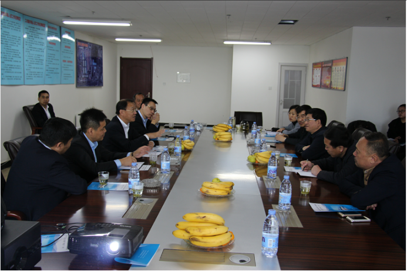
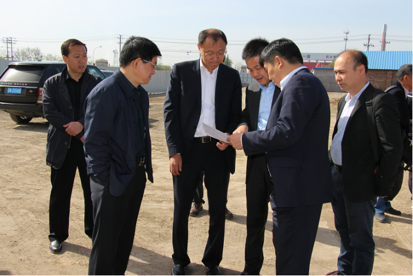
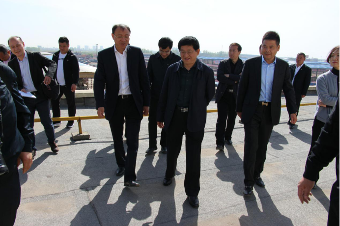
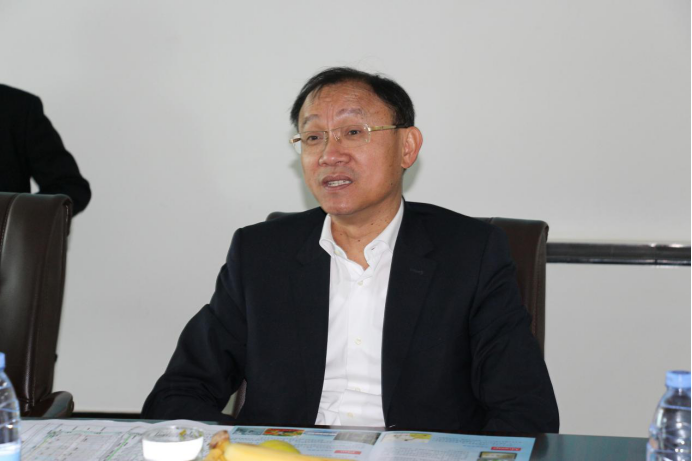
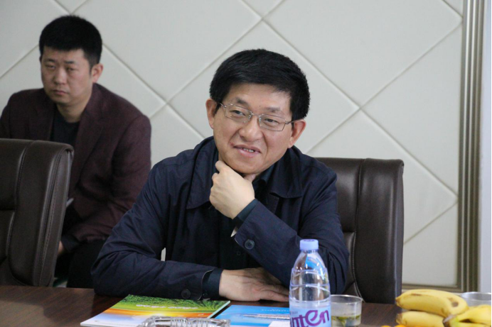
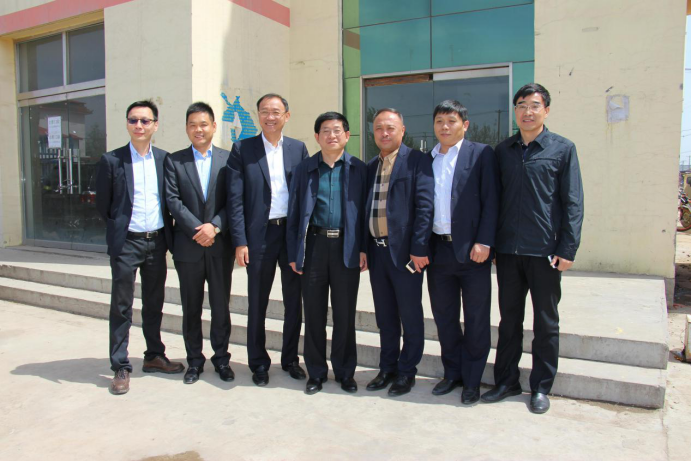

全国政协委员，宏安集团董事长邓清河一行来工农路市场考察
2017-04-18
4月14日，全国政协委员，香港太平绅士，宏安集团董事局主席邓清河先生、中国农产品交易有限公司执行董事及首席财务官梁瑞华、中国农产品交易有限公司区域总经理刘芳、中国农产品交易有限公司区域拓展总监李峰、宏安集团市场拓展经理洪华杰一行来保定工农路蔬菜果品批发市场考察、交流。保定市市场建设管理办公室谢占斌主任、张增强副主任、大韩蒋村总支书记付树根、世纪联农（北京）农产品股份有限公司郑得厚总经理热情接待了邓清河先生一行。

郑得厚总经理向邓清河先生详细介绍了保定工农路蔬菜果品批发市场提升改造项目整体规划、项目进展和施工进度情况。

谢占斌主任对邓清河先生一行的到来表示热烈的欢迎。在谢占斌主任的带领下，一行人来到市场办公楼楼顶，俯瞰了工农路市场全景，并向邓清河先生一行详细介绍了工农路市场的交易规模及整体运营情况。

座谈会上，邓清河先生对保定市市场建设管理办公室谢占斌主任、世纪联农（北京）农产品股份有限公司郑得厚总经理的接待表示感谢，并以视频的方式介绍了宏安集团及旗下上市公司宏进农批的发展情况，邓清河先生在介绍中说：在京津冀协同发展的大背景下，值此中国打造雄安特区的国家战略，宏进农批希望与保定市市场建设管理办公室和世纪联农（北京）农产品股份有限公司合作，将工农路市场打造为一个新型综合性农产品批发市场，服务保定市区、服务周边县市、服务雄安新区。

谢占斌主任在座谈会上表示，保定是京畿重地，首都南大门，以“保卫大都，安定天下”而得名。这次国家打造雄安新区又将地址选在保定雄县、安新、r容城三个县，既是国家千年大计，又是保定复兴契机。工农路市场位于保定南二环与长城南大街交叉口，距离雄安新区30公里，交通位置便利，区位优势明显。本次邓清河先生莅临工农路市场考察，以推进宏进农批打造全国性农批市场战略，既是宏进农批战略部署的关键一步，又是工农路市场未来发展的一大助力。


座谈会后，三方代表于市场办公楼前合影留念。